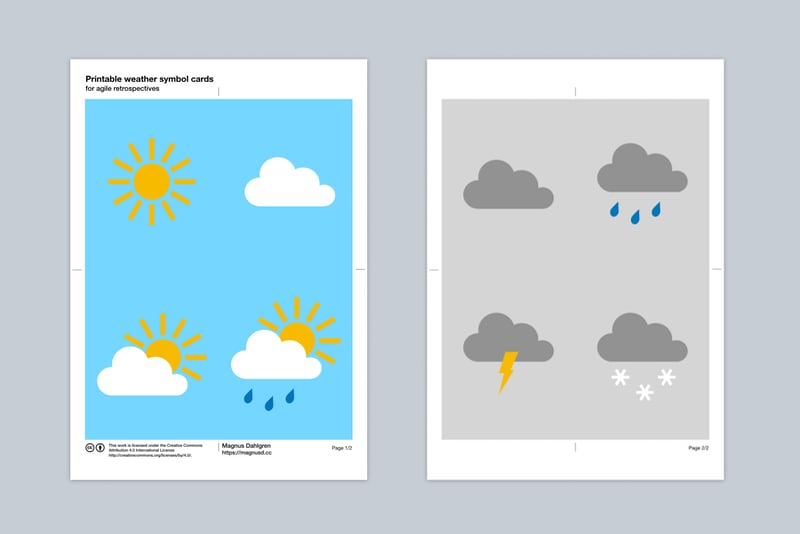

Printable weather symbol cards for retrospectives

The sprint weather report is one of my favourites when it comes to agile check-in exercises for retrospectives. I used to run this exercise by printing each symbol on A4, put them up on the board and let people dot vote, but it always felt a bit wasteful to throw away the marked print outs at the end of each retrospective. I have therefore created some cards to use and reuse instead.
In case they are useful to anyone else, I’m posting them here on the blog as a free download.
How to use the cards
I use these cards in a similar way to planning poker, counting down from 3 and letting everyone show their chosen card at the same time, before doing a quick round around the table to let everyone explain why they chose the card they did. When using the cards in this way, I recommend printing them on thick paper or laminating them.
Another way to use the cards is to let people, one by one, put their chosen card up on the board. Or you could put one of each card up on the board and let people mark their choice with a whiteboard marker.
Downloads
Back to blog

This work by Magnus Dahlgren is licensed under a Creative Commons Attribution 4.0 International License.